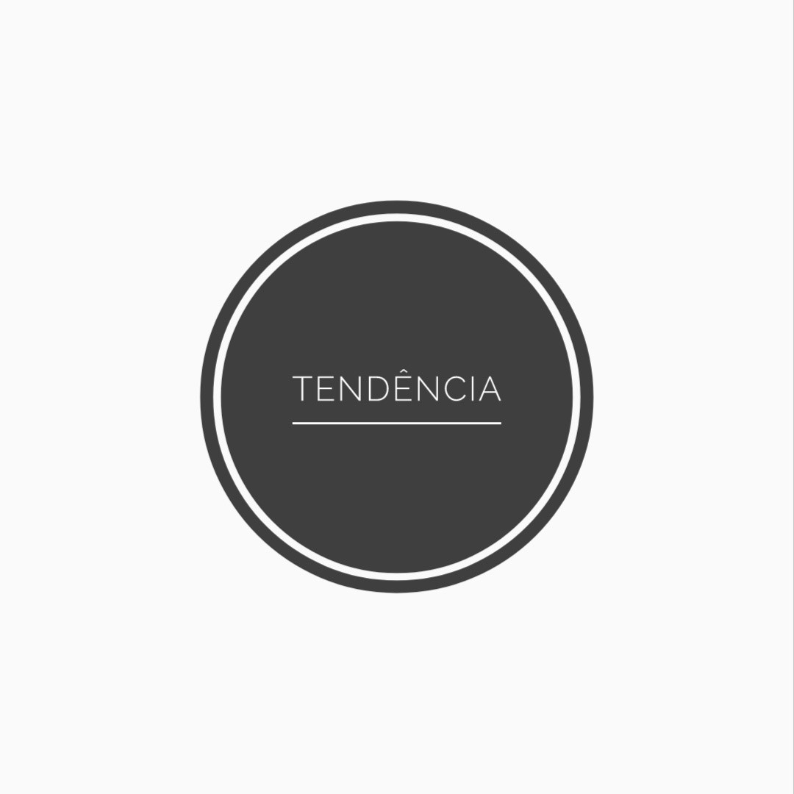

Tendências para apostar e arrasar!
- Cor nos olhos
- azul, vermelho, coral e mais uma infinidade de cores vão invadir as sombras.
A ideia é pintar toda a pálpebra móvel e investir em um “olho tudo”.

- Tons Neon
- Tudo indica que o verão de 2019 será a estação do neon.
A tonalidade flúor estará nas roupas, acessórios, esmaltes e, claro, na maquiagem também.
- Tons Metalizados
- O “olho tudo” da estação trará de volta também tons metalizados e brilhantes.
- Gloss
- Os lábios vêm mais brilhantes com a ajuda do bom e velho gloss,
sozinho ou por cima de batons mais sequinhos.
Início